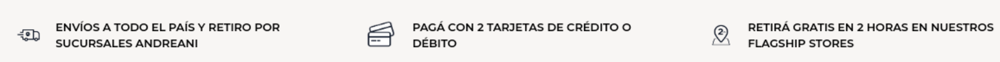
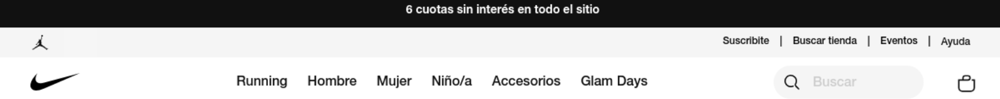

Prueba el siguiente ejemplo bajo el nombre ejemplo-flexbox-1.html
1✧ ¿Qué propiedad de CSS se utiliza para convertir el contenedor en un contenedor flex?
La propiedad CSS que se utiliza es display: flex;
2✧ ¿Qué propiedad de CSS se utiliza para centrar los elementos dentro del contenedor a lo largo del eje principal horizontal?
La propiedad CSS que se utiliza es justify-content: center;
3✧ ¿Qué propiedad de CSS se utiliza para centrar los elementos dentro del contenedor a lo largo del eje secundario vertical?
La propiedad CSS que se utiliza es align-items: center;
4✧ ¿Cuál es la altura del contenedor especificada en el código?
La altura del contenedor especificada en el codigo es height: 200px;
5✧ ¿Cuál es el ancho de las cajas dentro del contenedor?
El ancho de las cajas dentro del contenedor es width: 100px;
6✧ ¿Qué color de fondo se establece para las cajas dentro del contenedor?
El color de fondo que se establese dentro del contenedor, en mi caso, es un violeta claro (#9D4EDD)
7✧ ¿Qué etiqueta HTML se utiliza para crear el contenedor?
La etiqueta HTML que se utiliza para crear el contenedor es div
8✧ ¿Qué clase se aplica al contenedor para aplicar los estilos CSS?
La clase que se aplica al contenedor para aplicar los estilos CSS es class="container"
9✧ ¿Qué clase se aplica a las cajas dentro del contenedor para aplicar los estilos CSS?
La clase que se aplica a las cajas dentro del contenedor para aplicar estilos CSS es class="box"
10✧ ¿Cuál es el propósito principal del código CSS proporcionado?
El Proposito es crear una caja roja de 100px de tamaño en el centro de la pagina.
Ahora vamos a trabajar con el siguiente ejemplo bajo el nombre ejemplo-flexbox-2.html
1. ¿Qué propiedad CSS se utiliza para establecer un contenedor como contenedor flex?
La propiedad CSS que se utiliza para establece un contenedor como contenedor flex es display: flex;
2. ¿Qué valor se utiliza en la propiedad `flex-wrap` para permitir que los elementos se envuelvan en líneas adicionales si no hay suficiente espacio?
El valor que se utiliza en la propiedad `flex-wrap` para permitir que los elementos se envuelvan en líneas adicionales si no hay suficiente espacio es flex-wrap: wrap;
3. ¿Cuál es la propiedad CSS que se utiliza para centrar los elementos a lo largo del eje principal horizontal en un contenedor flex?
La propiedad CSS que se utiliza para centrar los elementos a lo largo del eje principal horizontal en un contenedor flex es justify-content: center;
4. ¿Cuál es la propiedad CSS que se utiliza para centrar los elementos a lo largo del eje secundario vertical en un contenedor flex?
La propiedad CSS que se utiliza para centrar los elementos a lo largo del eje secundario vertical en un contenedor flex es align-items: center;
5. ¿Cuál es el propósito del valor `justify-content: space-between` en la propiedad `justify-content` del encabezado?
El propósito del valor `justify-content: space-between` en la propiedad `justify-content` del encabezado es distribuir los elementos de manbera uniforme a lo largo del eje principal horizontal
6. ¿Cuál es el propósito del valor `align-items: baseline` en la propiedad `align-items` del encabezado?
El propósito del valor `align-items: baseline` en la propiedad `align-items` del encabezado es alinear los elementos del encabezado a lo largo de la linea de base
7. ¿Qué propiedad CSS se utiliza para establecer el ancho del contenedor del título del header. Clase container-title ?
La propiedad CSS que se utiliza para establecer el ancho del contenedor del título del header es width: 100%;
8. ¿Qué propiedad CSS se utiliza para alinear el texto del título en el centro?
La propiedad CSS que se utiliza para alinear el texto del título en el centro es text-align: center;
9. ¿Cuál es la propiedad CSS que se utiliza para establecer un margen a la derecha y a la izquierda del contenedor?
La propiedad CSS que se utiliza para establecer un margen a la derecha y a la izquierda del contenedor es margin:
10. ¿Qué propiedad CSS se utiliza para establecer el color de fondo del contenedor principal?
La propiedad CSS que se utiliza para establecer el color de fondo del contenedor principal es background-color:
Header:
a- Generar el código HTML y CSS según esta captura

Respuesta: motorola
b- Header de Nike

Respuesta: header de nike